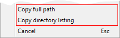

The ClipboardAssistant plug-in inserts additional items into standard contextual menus displayed in KO Approach. The following items may be inserted:
Copy full path item
Copies the full path of the file or folder to the clipboard. This item is displayed for all files and folders. For non file-system items (such as My Computer), this item will not be present.
Copy target path item
Copies to the clipboard the full path to the file or folder whose shortcut is selected. This item is displayed only for shortcuts.
Copy directory listing item
Copies the list of file and folder names contained in the selected folder, to the clipboard. This item is displayed only for file-system folders.
Depending on the type of the element for which the contextual menu is active, certain items may not be present. For example, items displayed in the contextual menu for a file system folder are as follows:

Choosing the Copy directory listing command on the KO Approach installation directory places the following data to the clipboard:
.. Approach.chm Approach.exe ApproachIpc.dll License.txt Locale Plugins Uninstall.exe whatsnew.txt